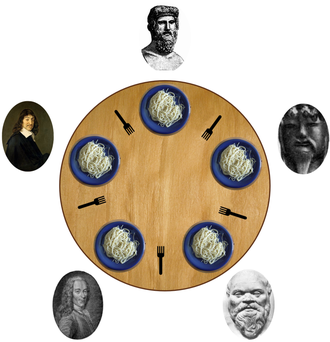

From Wikipedia, the free encyclopedia
In Computer Sciencethe dining philosophers problem is an example problem often used in concurrent algorithm design to illustrate synchronization issues and techniques for resolving them.
It was originally formulated in 1965 by Edsger Dijkstra as a student exam exercise, presented in terms of computers competing for access to tape drive peripherals. Soon after,Tony Hoare gave the problem its present form. [1][2][3][4]
Problems Statment [edit]
Five philosophers dine together at the same table. Each philosopher has their own place at the table. There is a fork between each plate. The dish served is a kind of spaghetti which has to be eaten with two forks. Each philosopher can only alternately think and eat. Moreover, a philosopher can only eat their spaghetti when they have both a left and right fork. Thus two forks will only be available when their two nearest neighbors are thinking, not eating. After an individual philosopher finishes eating, they will put down both forks. The problem is how to design a regimen (a concurrent algorithm) such that no philosopher will starve; i.e., each can forever continue to alternate between eating and thinking, assuming that no philosopher can know when others may want to eat or think (an issue of incomplete information) .
Problems [edit]
The problem was designed to illustrate the challenges of avoiding deadlock, a system state in which no progress is possible. To see that a proper solution to this problem is not obvious, consider a proposal in which each philosopher is instructed to behave as follows:
However, they each will think for an undetermined amount of time and may end up holding a left fork thinking, staring at the right side of the plate, unable to eat because there is no right fork, until they starve.
Resource starvation, mutual exclusion and livelock are other types of sequence and access problem.
Solution [edit]
Dijkstra's solution
Dijkstra's solution uses one mutex, one semaphore per philosopher and one state variable per philosopher. This solution is more complex than the resource hierarchy solution. [5][6]This is a C++20 version of Dijkstra's solution with Tanenbaum's changes:
#include
#include
#include
#include
#include
#include
constexpr const size_t N = 5; // number of philosophers (and forks)
enum class State
{
THINKING = 0, // philosopher is THINKING
HUNGRY = 1, // philosopher is trying to get forks
EATING = 2, // philosopher is EATING
};
size_t inline left(size_t i)
{
// number of the left neighbor of philosopher i, for whom both forks are available
return (i - 1 + N) % N; // N is added for the case when i - 1 is negative
}
size_t inline right(size_t i)
{
// number of the right neighbour of the philosopher i, for whom both forks are available
return (i + 1) % N;
}
State state[N]; // array to keep track of everyone'both_forks_available state
std::mutex critical_region_mtx; // mutual exclusion for critical regions for
// (picking up und putting down the forks)
std::mutex output_mtx; // for synchronized cout (printing THINKING/HUNGRY/EATING status)
// array of binary semaphors, one semaphore per philosopher.
// Acquired semaphore means philosopher i has acquired (blocked) two forks
std::binary_semaphore both_forks_available[N]
{
std::binary_semaphore{0}, std::binary_semaphore{0},
std::binary_semaphore{0}, std::binary_semaphore{0},
std::binary_semaphore{0}
};
size_t my_rand(size_t min, size_t max)
{
static std::mt19937 rnd(std::time(nullptr));
return std::uniform_int_distribution<>(min, max)(rnd);
}
void test(size_t i)
// if philosopher i is hungry and both neighbours are not eating then eat
{
// i: philosopher number, from 0 to N-1
if (state[i] == State::HUNGRY &&
state[left(i)] != State::EATING &&
state[right(i)] != State::EATING)
{
state[i] = State::EATING;
both_forks_available[i].release(); // forks are no longer needed for this eat session
}
}
void think(size_t i)
{
size_t duration = my_rand(400, 800);
{
std::lock_guard
std::cout << i << " is thinking " << duration << "ms\n";
}
std::this_thread::sleep_for(std::chrono::milliseconds(duration));
}
void take_forks(size_t i)
{
{
std::lock_guard
state[i] = State::HUNGRY; // record fact that philosopher i is State::HUNGRY
{
std::lock_guard
std::cout << "\t\t" << i << " is State::HUNGRY\n";
}
test(i); // try to acquire (a permit for) 2 forks
} // exit critical region
both_forks_available[i].acquire(); // block if forks were not acquired
}
void eat(size_t i)
{
size_t duration = my_rand(400, 800);
{
std::lock_guard
std::cout << "\t\t\t\t" << i << " is eating " << duration << "ms\n";
}
std::this_thread::sleep_for(std::chrono::milliseconds(duration));
}
void put_forks(size_t i)
{
std::lock_guard
state[i] = State::THINKING; // philosopher has finished State::EATING
test(left(i)); // see if left neighbor can now eat
test(right(i)); // see if right neighbor can now eat
// exit critical region by exiting the function
}
void philosopher(size_t i)
{
while (true)
{ // repeat forever
think(i); // philosopher is State::THINKING
take_forks(i); // acquire two forks or block
eat(i); // yum-yum, spaghetti
put_forks(i); // put both forks back on table and check if neighbours can eat
}
}
int main() {
std::cout << "dp_14\n";
std::jthread t0([&] { philosopher(0); }); // [&] means every variable outside the ensuing lambda
std::jthread t1([&] { philosopher(1); }); // is captured by reference
std::jthread t2([&] { philosopher(2); });
std::jthread t3([&] { philosopher(3); });
std::jthread t4([&] { philosopher(4); });
}
The function test() and its use in take_forks() and put_forks() make the Dijkstra solution deadlock-free.
Resource hierarchy solution [edit]
This solution assigns a partial order to the resources (the forks, in this case), and establishes the convention that all resources will be requested in order, and that no two resources unrelated by order will ever be used by a single unit of work at the same time. Here, the resources (forks) will be numbered 1 through 5 and each unit of work (philosopher) will always pick up the lower-numbered fork first, and then the higher-numbered fork, from among the two forks they plan to use. The order in which each philosopher puts down the forks does not matter. In this case, if four of the five philosophers simultaneously pick up their lower-numbered fork, only the highest-numbered fork will remain on the table, so the fifth philosopher will not be able to pick up any fork. Moreover, only one philosopher will have access to that highest-numbered fork, so he will be able to eat using two forks. This can intuitively be thought of as having one "left-handed" philosopher at the table, who -- unlike all the other philosophers -- takes his fork from the left first.
While the resource hierarchy solution avoids deadlocks, it is not always practical, especially when the list of required resources is not completely known in advance. For example, if a unit of work holds resources 3 and 5 and then determines it needs resource 2, it must release 5, then 3 before acquiring 2, and then it must re-acquire 3 and 5 in that order. Computer programs that access large numbers of database records would not run efficiently if they were required to release all higher-numbered records before accessing a new record, making the method impractical for that purpose.[2]
The resource hierarchy solution is not fair. If philosopher 1 is slow to take a fork, and if philosopher 2 is quick to think and pick its forks back up, then philosopher 1 will never get to pick up both forks. A fair solution must guarantee that each philosopher will eventually eat, no matter how slowly that philosopher moves relative to the others
The following source code is a C++11 implementation of the resource hierarchy solution for five philosophers. The sleep_for() function simulates the time normally spent with business logic.[7]
For GCC: compile with
g++ src.cpp -std=c++11 -lpthread
#include
#include
#include
#include
#include
#include
using namespace std;
int myrand(int min, int max) {
static mt19937 rnd(time(nullptr));
return uniform_int_distribution<>(min,max)(rnd);
}
void philosopher(int ph, mutex& ma, mutex& mb, mutex& mo) {
for (;;) { // prevent thread from termination
int duration = myrand(200, 800);
{
// Block { } limits scope of lock
lock_guard
cout<
this_thread::sleep_for(chrono::milliseconds(duration));
{
lock_guard
cout<<"\t\t"<
lock_guard
// sleep_for() Delay before seeking second fork can be added here but should not be required.
lock_guard
duration = myrand(200, 800);
{
lock_guard
cout<<"\t\t\t\t"<
this_thread::sleep_for(chrono::milliseconds(duration));
}
}
int main() {
cout<<"dining Philosophers C++11 with Resource hierarchy\n";
mutex m1, m2, m3, m4, m5; // 5 forks are 5 mutexes
mutex mo; // for proper output
// 5 philosophers are 5 threads
thread t1([&] {philosopher(1, m1, m2, mo);});
thread t2([&] {philosopher(2, m2, m3, mo);});
thread t3([&] {philosopher(3, m3, m4, mo);});
thread t4([&] {philosopher(4, m4, m5, mo);});
thread t5([&] {philosopher(5, m1, m5, mo);}); // Force a resource hierarchy
t1.join(); // prevent threads from termination
t2.join();
t3.join();
t4.join();
t5.join();
}
Arbitrator solution [edit]
Another approach is to guarantee that a philosopher can only pick up both forks or none by introducing an arbitrator, e.g., a waiter. In order to pick up the forks, a philosopher must ask permission of the waiter. The waiter gives permission to only one philosopher at a time until the philosopher has picked up both of their forks. Putting down a fork is always allowed. The waiter can be implemented as a mutex. In addition to introducing a new central entity (the waiter), this approach can result in reduced parallelism: if a philosopher is eating and one of his neighbors is requesting the forks, all other philosophers must wait until this request has been fulfilled even if forks for them are still available.
A solution presented by William Stallings[8] is to allow a maximum of n-1 philosophers to sit down at any time. The last philosopher would have to wait (for example, using a semaphore) for someone to finish dining before they "sit down" and request access to any fork. This guarantees at least one philosopher may always acquire both forks, allowing the system to make progress.
Chandy/Misra solution [edit]
In 1984, K. Mani Chandy and J. Misra[9] proposed a different solution to the dining philosophers problem to allow for arbitrary agents (numbered P1, ..., Pn) to contend for an arbitrary number of resources, unlike Dijkstra's solution. It is also completely distributed and requires no central authority after initialization. However, it violates the requirement that "the philosophers do not speak to each other" (due to the request messages).
This solution also allows for a large degree of concurrency, and will solve an arbitrarily large problem.
It also solves the starvation problem. The clean/dirty labels act as a way of giving preference to the most "starved" processes, and a disadvantage to processes that have just "eaten". One could compare their solution to one where philosophers are not allowed to eat twice in a row without letting others use the forks in between. Chandy and Misra's solution is more flexible than that, but has an element tending in that direction.
In their analysis, they derive a system of preference levels from the distribution of the forks and their clean/dirty states. They show that this system may describe a directed acyclic graph , and if so, the operations in their protocol cannot turn that graph into a cyclic one. This guarantees that deadlock cannot occur. However, if the system is initialized to a perfectly symmetric state, like all philosophers holding their left side forks, then the graph is cyclic at the outset, and their solution cannot prevent a deadlock. Initializing the system so that philosophers with lower IDs have dirty forks ensures the graph is initially acyclic.
See also [edit]
References [edit]
Bibliography [edit]
External links [edit]